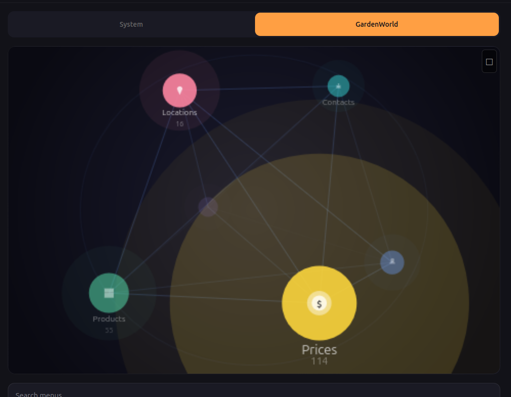

/* * BIM OOTB — Frictionless BIM. Two DBs. One browser. Zero install. * Copyright (c) 2025-2026 Redhuan D. Oon red1org@gmail.com * SPDX-License-Identifier: MIT /
Spatial ERP OOTB — Every Record Has a Place¶

The Data Globe: ERP entities as stars on a rotating sphere. Size = data volume. Colour = status. Position = activity. Drag to orbit, tap to drill. One glance replaces a dashboard, a status report, and a navigation menu.
The Problem¶
$83 billion is spent annually on ERP software across warehousing, retail, manufacturing, construction, agriculture, and food service. Yet the majority of small and mid-sized operations in these sectors — estimated at 70-80% globally — still run on spreadsheets, WhatsApp groups, and paper forms. Why?
Three barriers prevent ERP adoption at the field level:
-
Infrastructure cost. Traditional ERP (SAP, Odoo, iDempiere) requires a server, a database administrator, and months of implementation. Minimum viable deployment: $5,000-50,000 and 3-6 months. A 50-seat restaurant, a 5,000-bin warehouse, or a construction site in rural Bangladesh cannot justify this.
-
Connectivity dependence. Server-based ERP fails where it is needed most — the warehouse floor, the construction site, the farm in a region with intermittent mobile data. Field workers cannot wait for a server round-trip to record a goods receipt or mark a phase complete.
-
Training overhead. ERP interfaces are designed for back-office clerks at desks. A foreman on a construction site, a warehouse picker in an aisle, or a farm supervisor in a shed needs to record data in under 5 seconds with one hand. Forms, menus, and dropdown lists are hostile to this context.
The market opportunity is the long tail: businesses that have never had ERP because ERP costs too much, takes too long, requires a server they don't have, and presents an interface their field workers cannot use.
| Segment | Global market (2025) | % still on spreadsheets/paper | Opportunity |
|---|---|---|---|
| Construction project management | $9.8B | ~60% of sub-$50M contractors | Lead-to-close lifecycle, BOQ, approvals |
| Warehouse management (WMS) | $4.1B | ~70% of <500-bin operations | Pick/putaway, inventory count, reorder |
| Restaurant / F&B POS | $18.6B | ~50% of independent restaurants | Order, kitchen, payment, customer view |
| Agriculture / Farm ERP | $4.2B | ~80% in developing markets | Flock/crop tracking, feed, IoT sensors |
| Manufacturing (MES) | $15.4B | ~65% of small job shops | Work orders, station tracking, QC |
| Retail POS | $29.7B | ~40% of independent retailers | Planogram, sales, restock |
What if the ERP ran entirely in the browser? No server. No install. No connectivity requirement. The entire database — documents, journal, audit trail — in a single file smaller than a photo, loaded via WebAssembly in microseconds. The field worker swipes through their workspace on a $100 phone. The accountant sees balanced double-entry journals. The manager sees approval queues. Same data, same file, different views.
This is not a whitepaper. It is built and tested. The BIM OOTB viewer already renders 126,000 building elements in a browser, runs clash detection, and tracks changes — all with zero install, proven across 30+ real buildings with 155 automated tests. Spatial ERP extends the same engine from buildings to businesses.
The Solution — How It Works¶
Construction ERP POC — the first implementation (engine complete, 79/79 tests passing):
A land acquisition agent in Dhaka opens erp.html on their phone. Creates a lead for Plot 60, Gulshan-1. Adds landowner details (confidential). Shares a link to the architect — owner data automatically stripped. The architect drops an IFC file, the building renders on the plot, FAR is computed. The BOQ engineer receives a link, generates cost lines from the IFC geometry. Management approves. Legal closes. Journal auto-posts: debit LAND_ACQUISITION, credit CASH. Every step logged in an append-only operation log — full audit trail, undo capability, time-travel queries.
Six roles. One .db file. One browser. No server. No app download. No training beyond "swipe and tap."
The same engine — same five database tables, same state machine, same journal — handles any domain where things have coordinates and belong to documents: warehouses, restaurants, farms, factories, offices.
1. The Architecture¶
The system runs on two browser technologies, both mature and proven:
SQLite WASM (sql.js) — The Database¶
The entire database — containers, items, documents, journal, kernel_ops — lives in memory as a SQLite file loaded via WebAssembly. Queries execute in microseconds, not milliseconds. There is no HTTP round-trip. No spinner. No "loading..." The waiter taps a table card and the order appears before their finger lifts off the glass.
Traditional POS/ERP hits a server: network hop (50-200ms) + query (10-50ms) + render (50ms) = the user waits. SQLite WASM: query (0.1ms) + render (16ms at 60fps) = the user doesn't notice. That's the difference between software that feels like a tool and software that feels like part of your hand.
What this enables:
- Swipe between 100 cards with zero stutter — each card is a SQL query
- Heatmap recalculates on every op commit — no batch refresh
- Offline works perfectly — the .db is already local
- Phone with 2GB RAM handles a restaurant, warehouse, or factory floor
- The $100 Android and the $1500 iPhone feel the same
Three.js — The Spatial Layer¶
Three.js turns the phone GPU into a spatial renderer. The 3D floor plan, the heatmap colours, the red/green/amber glows, the card thumbnails — all rendered at 60 frames per second on commodity hardware. Already proven with 126,000 BIM elements on a mid-range laptop.
What this enables: - Heatmap is not a static chart — it's a live scene. Colours shift as kernel_ops commit. Cook marks "ready" → waiter's card glows green in the same frame. - Spatial navigation is real: orbit a warehouse, walk through a restaurant, zoom into a rack. Not a flat diagram — a space. - Transitions between roles feel cinematic: camera moves from owner's bird-eye to waiter's table-level to customer's single-table view - The mini 3D thumbnail on each swipe card is a live Three.js viewport, not a screenshot — it updates in real time
The combination¶
┌──────────────────────────────────────────────┐
│ SQLite WASM Three.js │
│ (the brain) (the eyes) │
│ │
│ Queries in µs Renders at 60fps │
│ kernel_ops log Heatmap overlay │
│ State machine Spatial navigation │
│ Journal posting Role-perspective camera │
│ Offline-first GPU-accelerated │
│ │
│ ──────────── Browser (the runtime) ──────── │
│ No server. No install. No app store. │
│ Same code on phone, tablet, desktop. │
└──────────────────────────────────────────────┘
Data size¶
A restaurant .db is ~500 KB (one photo). A 50K-SKU warehouse is ~5 MB. A 126K-element BIM building is ~230 MB. Even iDempiere's entire Application Dictionary fits in ~80 MB. A modern phone has 64-128 GB — the full ERP state is smaller than the app icon.
Scale path: Hot DB (< 10 MB, current state) loads instantly. Archive DB (completed docs, old kernel_ops) loads on demand.
One viewer, every role¶
One index.html on a bucket. The .db determines the domain. URL parameters determine the role:
| Scenario | URL |
|---|---|
| BIM client walkthrough | ?db=hospital.db&mode=readonly |
| Restaurant waiter | ?db=mykopitiam.db&scope=zone_patio&mode=operator |
| Restaurant customer | ?db=mykopitiam.db&scope=table_7&mode=readonly |
| Warehouse picker | ?db=gudang.db&scope=zone_A&mode=operator |
| Back office AP clerk | ?db=accounting.db&scope=payables&mode=full |
containers → spatial layout. ?scope= → role perspective. ?mode= → permission level. What changes per domain is the data, not the code. The POC proves this.
2. The Three Experiences¶
2.1 Desktop — The God View¶
Full 3D scene. Orbit, pan, zoom. Click any object to open its document. Colour-code by status (draft=grey, in-progress=blue, overdue=red, completed=green). This is the planner's view — the person who designs the layout and manages operations.
Already exists: the BIM OOTB viewer. Extend, don't rebuild.
2.2 Mobile — The Swipe View¶
The killer UX. The scene becomes a card stack:
- Swipe right → next location / zone / aisle (spatial navigation)
- Swipe left → previous
- Swipe up → drill into container (warehouse → aisle → rack → bin)
- Swipe down → back up one level
- Tap → open the document / act on it (approve, pick, count, complete)
Each card shows: - A mini 3D thumbnail of the location (pre-rendered or live Three.js) - The key numbers (items in zone, pending picks, value, alerts) - Action buttons (context-dependent: Pick, Putaway, Count, Approve)
This is the TikTok model applied to ERP: infinite vertical scroll through your business, each card is a spatial snapshot with actionable context. The user never sees a form. They see a place.
2.3 Walk View — AR-lite¶
Phone camera + GPS/beacon → overlay pick instructions on the actual aisle. Phase 3. But the data model supports it from day 1 because every item already has coordinates. When the tech is ready, the data is already spatial.
3. Domain Catalog¶
3.0 Construction ERP — The POC in Detail¶
Real requirement from Sysnova / Kazi Farms Group (Bangladesh). Land acquisition → development planning → BOQ → project execution. Six stakeholder roles. The architect provides IFC — the 3D building IS the spatial container.
The Six Roles and What They Do¶
| Role | Responsibility | Access level | Confidential data? |
|---|---|---|---|
| LAND (Agent / Business Dev) | Gathers land info, creates leads, negotiates with landowners | Full — all fields, all leads | Yes — owner name, phone, address |
| ARCH (Architect / Planner) | Reviews plot, links IFC model, computes FAR, comments on development | Operator — FAR fields + IFC only | No |
| ENGR (Engineering / BOQ) | Cost estimation from IFC elements, rates, material takeoff | Operator — BOQ tab only | No |
| SALE (Sales) | Reviews lead for sales viability, pricing per unit | Read-only — NO owner info visible | No — stripped by confidential_fields |
| MGMT (Management) | Approves or rejects leads, reviews financials, full oversight | Full — all fields, all leads | Yes |
| LEGL (Legal) | Post-approval processing, land title verification, contract closure | Operator — approved leads only | Yes |
The Full Workflow — Lead Lifecycle¶
Step 1: Agent (LAND) gathers information
────────────────────────────────────────
Agent visits Gulshan-1 site. Opens erp.html on phone. Taps [Create Lead].
Fills: Plot 60, Road 2, Block 4, 10 Katha, Freehold, East facing.
Adds landowner: Mr. Rahman, phone 0986533223 (confidential).
→ commitOp: LEAD_CREATE → document LEAD-1000000 in DRAFT
→ kernel_ops logs: who created it, when, every field value
Step 2: Agent organises and shares report
─────────────────────────────────────────
Agent adds activity notes: "Met owner 13 May. Willing to negotiate."
Agent adds follow-up date, meeting photos (future: attachments via kernel_ops).
Taps [Share → ARCH] → generates QR/link: erp.html?doc=LEAD-1000000&role=ARCH
Architect receives link. Opens in browser. Sees plot info + FAR fields.
Owner details are NOT visible (Architect scope = FAR only).
Step 3: Agent screens the lead
──────────────────────────────
Agent reviews all gathered info. Taps [Screen].
→ handler: screenLead() → DRAFT → IN_PROGRESS, sub_status = SCREENING
→ commitOp: LEAD_SCREEN { screened_by: 'Azmir' }
→ card turns amber on everyone's view
Step 4: Architect computes FAR
──────────────────────────────
Architect opens the shared link. Drops IFC file → building renders on plot.
Computes: FAR = Total Floor Area / Plot Area. Adds development plan.
→ handler: planFAR() → creates DEV_PLAN document, sub_status = FAR
→ commitOp: FAR_PLAN { far_value: 10000, dev_area: 20, saleable_area: 100 }
Step 5: Submission for approval
───────────────────────────────
Agent reviews FAR data. Taps [Submit for Approval].
→ handler: submitApproval() → sub_status = APPROVAL
→ commitOp: SUBMIT_APPROVAL { submitted_by: 'Azmir' }
Agent taps [Share → MGMT] → management receives link with full access.
Step 6: Management approval / rejection
────────────────────────────────────────
Manager opens link. Sees ALL fields: lead info, FAR, BOQ, owner details.
Reviews. Taps [Approve] or [Reject].
→ approve: handler approve() → sub_status = BOQ
→ reject: handler reject() → VOIDED, reason logged in kernel_ops
→ commitOp: LEAD_APPROVE or LEAD_REJECT { approved_by, reason }
Step 7: Engineering generates BOQ
─────────────────────────────────
After approval, BOQ team receives link (role=ENGR, scope=boq).
Opens the IFC building. Taps [Compute BOQ].
→ handler: generateBOQ() → reads IFC elements, applies rates
→ creates document_lines: IfcWall × 245 @ RM 285/M2, IfcSlab × 12 @ RM 450...
→ sub_status = NEGOTIATION
→ commitOp: BOQ_GENERATE { total_cost: 99225, line_count: 3 }
Step 8: Tracking — the kernel_ops audit trail
──────────────────────────────────────────────
At any point, any role queries the full history:
SELECT op_type, parameters, timestamp FROM kernel_ops
WHERE json_extract(parameters, '$.lead_id') = 'LEAD-1000000'
ORDER BY id
Result:
LEAD_CREATE → Azmir, 13 May 09:00
LEAD_SCREEN → Azmir, 13 May 10:30
FAR_PLAN → Architect, 13 May 14:00
SUBMIT_APPROVAL → Azmir, 13 May 15:00
LEAD_APPROVE → CEO, 14 May 09:00
BOQ_GENERATE → Engineer, 14 May 11:00
No separate audit module. No workflow engine. The ops log IS the audit trail,
the workflow history, and the notification source — all in one table.
Step 9: Legal closure
─────────────────────
After negotiation, Legal receives link (role=LEGL, scope=approved_only).
Processes land title, contracts. Taps [Close].
→ handler: closeLead() → COMPLETED, journal auto-posts
→ journal: debit LAND_ACQUISITION RM 50,000,000 / credit CASH RM 50,000,000
→ commitOp: LEAD_CLOSE { final_price: 50000000 }
Step 10: Financial verification
───────────────────────────────
Management queries journal:
SELECT account, SUM(debit), SUM(credit) FROM journal
WHERE doc_id = 'LEAD-1000000'
LAND_ACQUISITION 50,000,000 0
CASH 0 50,000,000
Balanced. Traceable to the exact commitOp that created it. Reversible
via undoOp if the entry was made in error. The accountant sees the same
data the agent entered — no transcription, no re-keying, no reconciliation gap.
What the Accountant Sees¶
The journal is double-entry from the start. Every COMPLETED transition auto-posts
balanced entries. The chart of accounts is stored in project_metadata and
extensible per domain:
| Account | Debits when... | Credits when... |
|---|---|---|
| LAND_ACQUISITION | Lead closed (land purchased) | Reversal of lead close |
| CONSTRUCTION_WIP | Development plan completed | Phase completed (cost transferred) |
| PROFESSIONAL_FEES | — | Architect/consultant invoiced |
| CASH | Customer payment received | Land purchased, fees paid |
| RETENTION | — | Contractor retention held |
Period queries are trivial: WHERE timestamp BETWEEN ? AND ?. Trial balance is
one GROUP BY. No chart-of-accounts setup wizard, no posting engine configuration.
The journal rules are in doc_engine.js — five lines of JSON per doc_type.
3.1–3.6 Other Domains (same engine, different seed)¶
Every domain below uses the same 5 tables, same StateMachine, same journal.
What changes is the seed .sql (containers + categories) and the handler .js.
| Domain | Container hierarchy | Documents | Key spatial feature |
|---|---|---|---|
| WMS | Warehouse → Zone → Aisle → Rack → Bin | Goods Receipt, Pick Order, Putaway, Movement, Count | Heatmap: bin utilization. Pick path as glowing route. |
| POS | Store → Zone → Aisle → Shelf → Facing | Sales Order, Restock, Planogram Change, Count | Products glow by sales velocity. Dead stock = grey. |
| MFG | Factory → Line → Station → Machine | Work Order (BOM), Material Issue, Production Receipt, QC | Stations colour by status. Bottleneck = red glow. |
| Logistics | Network → Hub → Dock → Vehicle | Shipment, Route, Delivery Confirmation | Map with 3D hub drill-down. Late shipment = red. |
| F&B | Restaurant → Zone → Table → Cover | Sales Order (meal), Invoice (bill), Payment | QR for customer: sees meal status, taps Pay. |
| Back Office | Office → Cabinet → Drawer → Folder | Invoice, Payment, Journal Entry, HR Record | Cabinet glow = overdue items. Spatial filing. |
3.5 F&B — The QR Moment¶
Customer scans QR at table → sees meal status in browser → taps Pay → journal auto-posts (debit CASH_BANK, credit REVENUE). No app, no login. Waiter swipes through tables on phone — red glow = waiting. Cook sees station-filtered card stack — taps to mark "plating." Five roles (owner, manager, waiter, cook, customer), same five tables, same .db.
3.6 Back Office — The Spatial Desktop¶
Documents become physical objects. Accountant opens their office → four cabinets (Payables, Receivables, GL, Payroll) → red glow = overdue invoices → swipe into cabinet → tap folder → approve. No menu, no search — the urgency heatmap replaces dashboards.
3.7 Farm ERP — Agriculture + IoT¶
Real-world context: Kazi Farms Group (Bangladesh) — poultry, dairy, feed, agriculture. Same group behind the Sysnova Construction ERP. The farm is spatial: Farm → Zone → Shed → Row → Cage/Animal.
The IoT twist: Sensor readings (temperature, humidity, egg count, feed level) are commitOp(db, 'SENSOR_READING', {...}) — same append-only log as human actions. Threshold breach auto-creates a FARM_ALERT document → card turns RED → manager taps [Acknowledge] → [Resolved]. Same StateMachine, automated trigger, human resolution.
Five farm types, same schema: Poultry (sheds/flocks), Dairy (barns/animals), Fish (ponds/stock), Crop (fields/batches), Feed Mill (silos/mixers). Each is a seed .sql + handler .js.
Offline is the primary requirement. Rural Bangladesh, no reliable connectivity. Farm worker records feed delivery on a $100 phone offline. kernel_ops accumulates in IndexedDB. Syncs when back in range. IoT gateway (Raspberry Pi) writes to the same .db format — no cloud dependency. Multiple farm sites sync daily via mobile data or USB .db transfer.
Seven roles: Farm Owner (desktop, all farms P&L), Farm Manager (tablet, one farm), Shed Supervisor (phone, assigned sheds), Veterinarian (phone, flagged animals), Feed Mill Operator (phone, production), Farm Worker (phone, tasks), IoT Gateway (Raspberry Pi, auto — no UI). Same five tables, different ?scope= filters.
4. Universal Schema — Five Tables¶
All domains share the same schema. No domain-specific tables.
-- Container hierarchy (recursive BOM, any depth)
-- A warehouse, a cabinet, a production line — all the same structure
CREATE TABLE containers (
id TEXT PRIMARY KEY,
parent_id TEXT REFERENCES containers(id),
name TEXT NOT NULL,
category TEXT, -- ZONE, AISLE, RACK, BIN, CABINET, DRAWER, STATION...
geometry_id TEXT, -- FK to component_geometries (3D shape)
x REAL, y REAL, z REAL, -- position within parent
metadata TEXT -- JSON: capacity, status, custom fields
);
-- Items that live in containers
-- A product on a shelf, a document in a drawer, a machine at a station
CREATE TABLE items (
id TEXT PRIMARY KEY,
container_id TEXT REFERENCES containers(id),
product_ref TEXT, -- what this item IS (SKU, doc type, machine model)
name TEXT,
qty REAL DEFAULT 1,
geometry_id TEXT, -- 3D shape (optional — not all items are visual)
x REAL, y REAL, z REAL, -- position within container
metadata TEXT -- JSON: serial, lot, expiry, status, custom
);
-- Documents (orders, receipts, movements, invoices — all the same)
CREATE TABLE documents (
id TEXT PRIMARY KEY,
doc_type TEXT NOT NULL, -- PICK_ORDER, WORK_ORDER, SALES_ORDER, INVOICE...
doc_status TEXT DEFAULT 'DRAFT', -- DRAFT | IN_PROGRESS | COMPLETED | VOIDED | REVERSED
created TEXT NOT NULL,
completed TEXT,
description TEXT,
metadata TEXT -- JSON: vendor, customer, priority, custom
);
-- Document lines — each line references an item at a location
CREATE TABLE document_lines (
id TEXT PRIMARY KEY,
doc_id TEXT REFERENCES documents(id),
item_id TEXT REFERENCES items(id),
container_id TEXT REFERENCES containers(id),
qty REAL,
unit_price REAL,
metadata TEXT -- JSON: lot, serial, notes
);
-- Journal — auto-generated on document completion
CREATE TABLE journal (
id TEXT PRIMARY KEY,
doc_id TEXT REFERENCES documents(id),
line_id TEXT REFERENCES document_lines(id),
account TEXT, -- MATERIAL | LABOUR | OVERHEAD | REVENUE | COGS
debit REAL DEFAULT 0,
credit REAL DEFAULT 0,
timestamp TEXT
);
Plus one registry table — the Application Dictionary for Spatial ERP:
-- Schema Registry — what each container category looks like and does
-- Adding a new domain = inserting rows here, not writing code
CREATE TABLE category_registry (
category TEXT PRIMARY KEY, -- BIN, TABLE, CABINET, STATION, DOCK, SHELF...
domain TEXT, -- WMS, F&B, MFG, BIM, BACK_OFFICE
json_schema TEXT, -- validates metadata for this category
default_geometry TEXT, -- which 3D model to render
actions TEXT, -- JSON list: ["Pick","Count","Order"] or ["TakeOrder","MarkServed"]
heatmap_rule TEXT, -- JSON: {"field":"qty","red_below":100,"green_above":500}
label_template TEXT -- how to render the card title: "{name} — {parent.name}"
);
This is the equivalent of iDempiere's Application Dictionary (AD_Table,
AD_Column, AD_Field) — but in one table. When the viewer renders a
container, it looks up category_registry to know: which 3D model to draw,
which action buttons to show, how to colour the heatmap, and how to format
the card. Adding a new container type (e.g., DOCK_DOOR for WMS) is an
INSERT, not a code change.
Plus the existing tables that carry over unchanged:
- kernel_ops — change log, undo/redo, replay (add user_tag column)
- component_geometries — 3D shapes for any domain
- project_metadata — key/value store for project-level config
Total: 5 data tables + 1 registry + kernel_ops + geometries + metadata = 9 tables. Compare to iDempiere's 900+ tables or SAP's 80,000+ tables.
5. State Machine — One for All Documents¶
┌─────────┐
│ DRAFT │──────── user creates or auto-generates
└────┬────┘
│ start
┌────▼──────────┐
│ IN_PROGRESS │──────── work happening (picking, producing, approving)
└────┬──────────┘
│ complete
┌────▼──────────┐
│ COMPLETED │──────── journal entries auto-generated
└────┬──────────┘
│ reverse (error correction)
┌────▼──────────┐
│ REVERSED │──────── counter-journal entries auto-generated
└──────────────┘
Any state except COMPLETED/REVERSED:
│ void
┌────▼──────────┐
│ VOIDED │──────── cancelled, no journal impact
└──────────────┘
Every transition is a kernel_op. Full audit trail. Undo = reverse the transition.
5b. kernel_ops — The Only Infrastructure You Need¶
Traditional ERP systems require a dozen auxiliary tables and services to
handle audit, notifications, workflow, undo, events, and conflict resolution.
kernel_ops — already built, already proven in the BIM viewer — replaces
all of them with one table and four functions: commitOp, undoOp,
redoOp, replayOps.
What kernel_ops kills¶
| Traditional ERP component | Lines of code / infra | kernel_ops equivalent |
|---|---|---|
| Audit trail table (AD_ChangeLog) | Schema + triggers + UI | commitOp() — every mutation logged with timestamp |
| Notification service (AD_Note) | Table + poller + email/push | replayOps() since last check — new ops ARE notifications |
| Workflow queue (AD_WF_Activity) | Engine + state + assignment | Filter WHERE op_type='ORDER_SEND' AND undone=0 |
| Approval history | Separate table + FK chain | op_type='APPROVE' with user_tag in parameters |
| Undo / redo stack | Custom per-module | undoOp() / redoOp() — generic, works for any domain |
| Event bus / message broker | Kafka / RabbitMQ / WebSocket | replayOps(db, 'ORDER_SEND') — poll the table |
| Conflict resolution log | Merge tables + resolution UI | Timestamps + user_tag — ops from two devices sort naturally |
| Session history | Separate tracking | SESSION_START op type already exists |
| Debug / support trace | Logging infra + retention | The ops table IS the trace — SELECT * FROM kernel_ops ORDER BY id |
That's 9 systems replaced by 1 table with 7 columns.
How it works in F&B (example)¶
Waiter takes order at Table 7:
commitOp(db, 'ORDER_SEND', {table: 7, items: ['Nasi Lemak', '2x Teh Tarik']})
Cook checks for work:
replayOps(db, 'ORDER_SEND') → sees the order → starts cooking
Cook marks item ready:
commitOp(db, 'ITEM_READY', {item: 'Nasi Lemak', table: 7})
Waiter's next swipe:
replayOps(db, 'ITEM_READY') → card for Table 7 shows green on Nasi Lemak
Customer taps Pay:
commitOp(db, 'DOC_COMPLETE', {doc_id: 'ORD-047', payment: 'card'})
→ journal auto-posts (debit CASH_BANK, credit REVENUE)
Owner checks end of day:
replayOps(db) → full timeline of every order, every item, every payment
No message broker. No event bus. No notification service. No WebSocket server.
No approval queue. The ops table is the bus — every role queries it from
their perspective using replayOps with a type filter.
Why this matters for the POC¶
The POC user cycling through roles on one phone is literally doing
replayOps each time they switch. "What happened since I was last the cook?"
= query kernel_ops for recent ops of types the cook cares about. The role
band switch IS a replay query. The architecture IS the UX.
When two phones share the same .db via cloud relay, the same replayOps
call now picks up ops from the other person. No code change. The
single-user POC and the multi-user deployment use the same read path.
5c. Component Architecture — What Gets Built¶
Three layers. The core is immutable — built once, never rewritten per domain. Handlers are stateless plugins. Adapters are the UI skin.
┌─────────────────────────────────────────────────────────────────┐
│ BROWSER (same for all roles) │
├─────────────────┬──────────────────────────┬────────────────────┤
│ Adapters │ Handlers │ Core │
│ (UI skin) │ (domain logic plugins) │ (immutable) │
├─────────────────┼──────────────────────────┼────────────────────┤
│ ThreeScene │ MatchEngine (P2P) │ kernel_ops (OpLog) │
│ SwipeCardStack │ ReorderDetector (WMS) │ StateMachine │
│ RoleBand │ KitchenDisplay (F&B) │ JournalEngine │
│ RoleFilter │ PlanogramSolver (POS) │ SpatialIndex │
│ QRGateway │ ... add per scenario │ CategoryRegistry │
└─────────────────┴──────────────────────────┴────────────────────┘
│
▼
SQLite WASM (.db file)
Core (built once, never changes per domain)¶
| Component | What it does | Already exists? |
|---|---|---|
| kernel_ops (OpLog) | Append-only log. commitOp, undoOp, redoOp, replayOps. Every mutation enters here. No second path. |
Yes — kernel_ops.js, proven |
| StateMachine | Pure function: transition(doc_type, status, event) → {new_status, side_effects}. Five states, same for all doc types. Domain-specific rules live in transition guards, not in the machine. |
New — ~50 lines JS |
| JournalEngine | Listens for COMPLETED transitions → auto-generates debit/credit from document_lines metadata. Rule-based: doc_type determines which accounts. |
New — ~30 lines JS |
| SpatialIndex | R-tree of container bounds + item positions. Powers heatmap and "what's near me?" queries. | Yes — R-tree in BIM viewer |
| CategoryRegistry | Reads category_registry table → tells the UI which 3D model, which actions, which heatmap rule for each container type. |
New — ~20 lines JS (just a lookup) |
Handlers (stateless plugins — read state, write ops)¶
Handlers follow one invariant pattern:
1. Read current state (query tables)
2. Compute changes (pure logic)
3. commitOp() for each change
4. Done — no hidden state, no stored procedures
| Handler | Domain | What it does |
|---|---|---|
| MatchEngine | P2P | Runs 3-way match query. Returns MATCH or VARIANCE. On approve, commits DOC_STATUS op. |
| ReorderDetector | WMS | Queries items where qty < reorder point. Creates PURCHASE_ORDER documents. |
| KitchenDisplay | F&B | replayOps(db, 'ORDER_SEND') filtered by station. Read-only — notification IS the query. |
| PlanogramSolver | POS | Drag shelf item → commits ITEM_MOVE op. Each move is reversible via undoOp. |
| VarianceApprover | P2P | Commits VARIANCE_APPROVE op with reason, then DOC_STATUS to COMPLETED. |
Adding a new scenario = writing a new handler function. The handler reads state, computes, calls commitOp. It never touches the core.
Adapters (UI skin — swappable)¶
| Adapter | What it does | Already exists? |
|---|---|---|
| ThreeScene | Renders containers + items as 3D objects. Heatmap colours from category_registry rules. | Yes — BIM viewer Three.js scene |
| SwipeCardStack | Maps container hierarchy to swipe gestures + cards. | New — mobile UI component |
| RoleBand | Top bar: role label + colour + [QR] + [<>] switch. | New — but simple DOM |
| RoleFilter | Reads ?scope= + ?mode= → builds WHERE clause on all queries. |
New — ~15 lines JS |
| QRGateway | Generates share URL with scope + mode. Uses existing share.js pattern. | Extends existing share.js |
The invariant that makes it survive¶
Every user gesture follows the same path:
User taps [action]
→ Adapter calls Handler function
→ Handler queries current state (SELECT from tables)
→ Handler computes changes (pure logic)
→ Handler calls commitOp() for each change
→ kernel_ops logs the op
→ Table updated (current state)
→ JournalEngine auto-posts if COMPLETED
→ Adapter refreshes from new state
→ User sees the change (colour shift, card update, status change)
No exceptions. A waiter adding a menu item, a picker confirming a bin, an AP clerk approving an invoice, a customer tapping Pay — all follow this exact path. That's why undo works everywhere, why audit is automatic, and why adding a domain never touches the core.
Why this is more powerful than iDempiere's Application Dictionary¶
iDempiere's AD is brilliant — you define tables, windows, fields, and validation rules in metadata. The Java code stays unchanged. You add a domain by inserting AD rows, not writing Java. But it has three limits:
-
Schema changes are still needed. New domain → new tables (or reuse generic columns). That's a data-driven schema change, but it's still a schema change. In Spatial ERP OOTB, the five tables never change. New domain = new rows in
containers,items, andcategory_registry. NoCREATE TABLE. Ever. -
Process variation requires Java. A Pick Order vs Invoice Approval need different DocAction classes. You write Java for non-trivial logic. In Spatial ERP OOTB, handlers are JS functions — 20-50 lines each, stateless, hot-swappable, same pattern for every domain.
-
No event sourcing. iDempiere's AD_ChangeLog is a secondary audit artifact. Undo doesn't exist (or is a permission). Offline is impossible. kernel_ops is the primary infrastructure — undo, redo, replay, sync, and audit are the same mechanism.
The layering compared:
iDempiere AD Spatial ERP OOTB
────────────────── ──────────────────
AD_Table, AD_Column, AD_Field category_registry (1 table)
AD_Val_Rule, AD_Process Handlers (JS functions)
AD_Window, AD_Tab, AD_Form Adapters (ThreeScene, SwipeCard)
AD_ChangeLog (secondary) kernel_ops (primary)
900+ tables 9 tables
DocAction.java (2000+ lines/type) StateMachine (~50 lines, all types)
PostgreSQL + JVM + server SQLite WASM + browser
The design principle: simulate Git, not Eclipse.
Git's core is tiny — content-addressable objects + a commit log. Everything else (branches, tags, remotes, merge strategies) is scripts and conventions on top. Git survives because the core is so small that it cannot break.
Eclipse's plugin architecture (OSGi) is the opposite — you write Java classes that extend extension points. That's code per feature. Plugins conflict, versions drift, the registry becomes a maintenance burden.
Spatial ERP OOTB follows Git: - Core = kernel_ops (commit log) + five tables (working tree) + StateMachine (transition rules). ~200 lines. - Everything else = handlers that read and write ops + adapters that render state. Replaceable. Domain-specific. Never touch the core.
The core survives any roadmap because there is almost nothing in it to break.
6. The Swipe UX Spec¶
6.1 Navigation Model¶
The spatial hierarchy maps to swipe gestures:
Swipe RIGHT → next sibling (Aisle 1 → Aisle 2 → Aisle 3)
Swipe LEFT → prev sibling (Aisle 3 → Aisle 2 → Aisle 1)
Swipe UP → drill in (Aisle → Rack → Bin)
Swipe DOWN → back out (Bin → Rack → Aisle)
TAP → act (open document, confirm pick, approve)
LONG PRESS → inspect (full detail card, 3D preview, history)
6.2 Role Band — The Top Bar¶
The role band is the most important UI element. It sits at the top of the phone, always visible, and does three things at once:
- Shows who you are — big label, colour-coded, unmistakable
- Lets you switch — tap to cycle roles (POC mode)
- Shares the opposing role — QR icon generates a shareable link
┌─────────────────────────────────────────┐
│ ┌──────────┐ WAITER [QR] [<>] │ Role band (colour = role)
│ │ WAIT │ Zone: Patio │ [QR] = share this role
│ └──────────┘ [<>] = switch role
└─────────────────────────────────────────┘
Role colours and labels:
| Label | Role | Band colour | QR shares... |
|---|---|---|---|
| OWNER | Owner / manager | Dark blue | Operator link (waiter/picker view) |
| SUPE | Supervisor | Purple | Operator link for their section |
| WAIT | Waiter / operator | Green | Customer link for current table |
| COOK | Kitchen / station | Orange | — (internal only) |
| CUST | Customer | Teal | — (end of chain) |
| PICK | Picker (WMS) | Yellow | Driver link (dock door view) |
| DRIVE | Driver | Grey | — (end of chain) |
The [QR] button generates a link for the opposing role — the person on the other side of the transaction:
- Waiter taps [QR] while viewing Table 7 → generates customer link:
?scope=table_7&mode=readonly→ QR code on screen, or copy-to-clipboard share sheet (WhatsApp, email — same as BIM OOTB share) - Owner taps [QR] → generates operator link:
?mode=operator→ waiter scans QR, gets the swipe view for their section - Picker taps [QR] at dock → generates driver link:
?scope=dock_3&mode=readonly→ driver sees inbound shipment status
The [<>] switch button (POC mode only): cycles through all roles on the same device. The screen transitions: band colour changes, action buttons reconfigure, scope filters adjust. The data doesn't change — only the perspective changes. One tap = "now I'm the customer seeing what my waiter just did."
In shared/deployed mode: the [<>] switch is hidden. The role is determined by the URL parameters. The [QR] button remains — it's always useful to share the other side of the transaction.
POC mode — role switcher visible:
┌─────────────────────────────────────────┐
│ [OWNER] [SUPE] [WAIT] [COOK] [CUST] │ Tap any role
│ ════════ │ Underline = active
└─────────────────────────────────────────┘
↓ tap CUST
┌─────────────────────────────────────────┐
│ [OWNER] [SUPE] [WAIT] [COOK] [CUST] │ Teal band
│ ════ │ Actions → readonly + pay
└─────────────────────────────────────────┘
The demo script becomes: 1. Open restaurant. Band says OWNER (blue). See all tables, P&L, heat map. 2. Tap WAIT. Band turns green. See only your tables. Swipe. Tap order. 3. Tap COOK. Band turns orange. See kitchen queue. Mark "plating." 4. Tap CUST. Band turns teal. See your table only. Meal status. Tap "Pay." 5. Tap OWNER. Band turns blue. See the journal entry. Table released. 6. Tap [QR] on any role → hand phone to friend → they experience the other side.
60 seconds. All roles. One phone. Then hand it to a friend.
6.3 Card Layout¶
Each swipe-card (below the role band):
┌─────────────────────────────────┐
│ ┌───────────────────────────┐ │
│ │ │ │
│ │ 3D Thumbnail │ │ Top 60%: mini Three.js scene
│ │ (live or cached) │ │ or pre-rendered snapshot
│ │ │ │
│ └───────────────────────────┘ │
│ │
│ Aisle 3 — Zone B │ Location breadcrumb
│ ▓▓▓▓▓▓▓░░░ 68% full │ Capacity / utilization bar
│ │
│ 🔴 3 picks pending │ Alert / action summary
│ 🟢 12 items in stock │ (colour = urgency)
│ │
│ [ Pick ] [ Count ] [ Move ] │ Context actions (role-dependent)
└─────────────────────────────────┘
6.4 Heatmap Overlay¶
In 3D view (desktop) or card thumbnails (mobile), objects colour by status:
| Colour | Meaning |
|---|---|
| Red glow | Action needed / overdue / blocked |
| Amber | Approaching threshold (low stock, due soon) |
| Green | OK / completed / available |
| Grey | Inactive / empty / not relevant to current task |
| Blue pulse | In progress (someone working on it) |
The user's eye is drawn to red. No dashboard needed.
6.5 Data Globe — Spatial Navigation (S257, ad_graph.js)¶
Traditional ERP presents data as a tree: menu → window → tab → grid → form. But ERP data is a graph: partners link to products, products link to prices, prices link to orders, orders link to invoices. The tree UI forces a linear path through a non-linear structure. Users compensate by opening 8 tabs, alt-tabbing, and running reports.
The Data Globe renders the graph directly. Every AD_Table with data becomes a node on a 3D sphere. The user sees the entire data landscape in one glance.
┌──────────────────────────────────────────────────────────┐
│ DATA GLOBE │
│ │
│ ◉ Partners (18) │
│ ╱ ╲ │
│ ◉ Contacts ◉───◉ Products (55) │
│ │ Prices │ │
│ ◉ Locations (131) ◉ Categories (13) │
│ │
│ Position = importance Colour = status │
│ Size = data volume Lines = FK relationships │
│ Front = active Back = archived │
│ Drag = orbit Tap = drill │
└──────────────────────────────────────────────────────────┘
One glance replaces: a dashboard, a status report, a navigation menu, and a search query. The spatial layout is the analysis.
How it works¶
-
Build: Query each AD_Table for row count and classify records by status (DocStatus, IsActive) + date freshness (Updated/Created) + field completeness. Fibonacci sphere distributes nodes evenly — active records placed at front, inactive behind.
-
Render: Canvas 2D at 60fps. Each node projected from 3D sphere coordinates to 2D screen via perspective divide. Painter's algorithm (far-first) gives depth. Front nodes are large and bright; back nodes are small, dim dots.
-
Interact: Drag to orbit the globe. Momentum on release — flick it and it coasts to a stop. Scroll to zoom. Tap a node — it flies to front centre (ease-in-out, ~0.7s) then drills into its records. ESC or tap empty space to go back.
Star colouring — status at a glance¶
Records are coloured by a blended score of status + freshness + completeness:
| Colour | Meaning | Source |
|---|---|---|
Cyan #4fc3f7 |
Complete / approved / hot | DocStatus=CO/CL/AP or activity > 0.75 |
Green #7bed9f |
Active, recently updated | Activity 0.55–0.75 |
Amber #ffd93d |
Partial, ageing | Activity 0.35–0.55 |
Red #ff7043 |
Draft / sparse / stale | DocStatus=DR or activity < 0.35 |
Grey #555 |
Archived / inactive | IsActive=N |
Activity score = freshness(Updated) × 0.4 + field_completeness × 0.6
Active records glow — double glow rings, bright white core. Archived records are faint dots. The CFO sees dataset health instantly.
Entity icons¶
Each table type has a distinctive Canvas-drawn icon:
| Entity | Icon | Drawn shape |
|---|---|---|
| C_BPartner | Person | Head circle + shoulder arc |
| M_Product | Product | Box with lid line |
| C_BPartner_Location | Location | Map pin with dot |
| M_ProductPrice | Price | Circle with $ |
| M_Product_Category | Category | Tag pentagon |
| AD_User | Contact | Card rectangle + head |
| AD_* (system) | Table | Grid rows |
Drill flow¶
HOME GLOBE ENTITY GLOBE CARD VIEW
┌───────────────┐ ┌───────────────┐ ┌───────────────┐
│ ◉ Partners │ tap │ ◉ Acme Corp │ tap │ Name: Acme │
│ ╲ │ ───→ │ ◉ Seed Farm │ ───→ │ Status: [CO] │
│ ◉ Products │ │ ● old vendor │ │ Partner: FK │
│ ╱ │ │ ● archived │ │ [< 3/18 >] │
│ ◉ Prices │ │ │ ├───────────────┤
│ │ │ drag=orbit │ │ Contacts (2) │
│ drag=orbit │ │ tap=open card │ │ Locations (1) │
│ tap=drill │ │ ESC=back │ │ (detail tabs) │
└───────────────┘ └───────────────┘ └───────────────┘
Why this works on mobile¶
| Desktop | Mobile | Why natural |
|---|---|---|
| Mouse drag | Finger drag | Same gesture, more intuitive on touch |
| Scroll wheel | Pinch zoom | Native phone gesture |
| Click | Tap | Identical |
| Hover tooltip | Long press | Standard mobile pattern |
| Arrow keys | Swipe on cards | Already implemented in card view |
| ESC | Back gesture | OS-native |
The globe is better on mobile than desktop: - No hover dependency — everything is tap/drag - Orbit gesture = same muscle memory as Google Earth / Apple Maps - Fly-to-front animation gives spatial feedback that flat lists lack - Star colouring replaces column sorting (awkward on phones)
The governance layer¶
The globe doesn't know about Business Partners or Products. It knows about AD_Tables with rows. Any new table in the Application Dictionary automatically appears as a node. Add fields → they render in card view. Add DisplayLogic → fields show/hide by context. The metadata is the UI definition.
This makes the globe a governance layer: it shows the health of the entire dataset at a glance. Which entities have activity? Which are stale? Which have sparse data? No report needed — the spatial layout tells you.
Stack:
Layer 4: SPATIAL UI (ad_graph.js) ← globe / constellation
Layer 3: CARD UI (ad_ui.js) ← forms / panels / CRUD
Layer 2: DATA ENGINE (ad_data.js) ← generic CRUD + AD parser
Layer 1: STORAGE (SQLite WASM) ← 7.7MB AD + data
Layer 0: SPEC (AD metadata) ← self-describing schema
Future: Three.js upgrade¶
When erp.html loads Three.js, the globe upgrades to true WebGL: - Depth-of-field blur (bokeh) for back-hemisphere nodes - Bloom post-processing for active star glow - Sprite textures for product images / BP photos - OrbitControls with inertia (proven in BIM viewer) - Particle trails connecting recently-edited records
Future: kernel_ops live pulse¶
Every commitOp() writes to the op log. The globe subscribes:
- Record just saved → node brightens for 10 seconds, then fades
- Record edited by another tab (BroadcastChannel) → node pulses
- Undo → node flickers briefly
- The globe becomes a live operations monitor
Future: mind map mode¶
Toggle from globe to flat force-directed graph: - Drag nodes freely, pin them in place - Group by category (auto-cluster products, separate from partners) - Draw custom relationship edges - Export as PNG for presentations - Miro board — but populated from live ERP data
Proven by tests (S257)¶
GRAPH-1..9 in test_ad_ui.js: node creation for both clients, entity
drill, system view, 6 GardenWorld entities, 7 system entities, 18–55
records per entity view. 153/153 total tests passing.
7. POC First — All-in-One Device¶
7.1 The POC Principle¶
The maker IS the user. The seller IS the buyer. One phone. One .db.
The POC doesn't separate roles across devices or networks. One person experiences the entire flow on one device: set up the restaurant floor plan, take an order as waiter, see the kitchen queue, view it as the customer, settle the bill. All roles, all swipe directions, one browser, one session.
This is exactly how BIM OOTB was proven — one person drops an IFC file, sees the 3D scene, runs clash detection, exports a BOQ. The single-user experience IS the product. Multi-user is a deployment choice, not a feature dependency.
Why this works as a demo: The person watching the POC sees ALL roles in 60 seconds. They don't need to imagine "what the customer would see" — they see it. They don't need a second phone — they swipe between perspectives. The power is in the data model, not the network topology.
7.2 The Two-Step Path¶
Step 1: POC (now) Step 2: Deployed system (when ready)
───────────────── ──────────────────────────────────────
One phone, one .db .db on OCI bucket (you already do this)
All roles on one device ?scope= filters per role
Maker = user Owner shares links/QR codes
Edit + view in same session Cloud relay: edits sync via bucket
No server, no cloud Same OCI setup as BIM OOTB today
Step 2 is NOT a rebuild. It's the same .db, same viewer, same swipe UI —
just uploaded to a bucket and shared via URL, exactly like BIM OOTB share
links already work. The ?scope= and ?mode= parameters are already in
the URL — they just become meaningful when multiple people access the same data.
7.3 Cloud Relay (Step 2 — when needed)¶
When the user is ready to separate maker from consumer:
- Owner edits the
.dblocally (floor plan, menu, prices) - Owner uploads to OCI bucket (same
oci os object putas BIM OOTB) - Waiter opens the bucket URL on their phone — full swipe mode
- Customer scans QR → same bucket URL with
?scope=table_7 - Edits (order taken, item marked served) write to local
.dbin browser - Sync = waiter's browser re-uploads the modified
.dbto bucket (or a tiny cloud function mergeskernel_opslogs — same merge pattern as git: each op has a timestamp and user_tag, conflicts are visible)
This is not new infrastructure. It's the BIM share link pattern with write-back. The OCI bucket IS the cloud relay.
7.4 Access Tiers (active in Step 2)¶
?mode= |
What it means | Who uses it |
|---|---|---|
full |
All actions visible (create, edit, complete, void) | Owner, manager |
operator |
Contextual actions only (take order, mark served) | Waiter, picker, cook |
readonly |
View only + payment | Customer, auditor, vendor |
request |
View + submit requests (needs approval) | Customer self-order (Phase 2) |
?scope= |
What it filters | Example |
|---|---|---|
| (empty) | Full .db — all containers |
Owner view |
zone_patio |
One zone and its children | Waiter's assigned section |
table_7 |
One container only | Customer QR |
station_grill |
Kitchen station filter | Cook's display |
In POC mode, these parameters are ignored — you see everything, you can do
everything. They exist in the URL spec so that Step 2 is just adding
?scope= to a share link.
7.5 Access Patterns by Domain (Step 2)¶
| Domain | Full access | Filtered access | QR / public access |
|---|---|---|---|
| BIM | Project manager | Discipline lead (scope=STR) | Client walkthrough (readonly) |
| WMS | Warehouse manager | Picker (scope=zone_A) | Delivery driver (dock door) |
| POS | Store owner | Section manager (scope=electronics) | — |
| F&B | Restaurant owner | Waiter (scope=zone_patio) | Customer (scope=table_7) |
| MFG | Plant manager | Line supervisor (scope=line_2) | Auditor (readonly) |
| Back Office | CFO | AP clerk (scope=payables) | Vendor (their invoices only) |
8. Implementation Phases¶
Phase 1 — The POC: Schema + Swipe + Construction on One Phone¶
Goal: One person, one phone, one .db. Proves the five-table schema,
the swipe UX, the state machine, and the journal — all in one demo.
Construction first: Real requirement from Sysnova / Kazi Farms Group. The BIM viewer already proves the 3D engine. The POC proves the ERP layer.
- [x] Doc status state machine in
doc_engine.js— DONE 5 states, 4 events - [x] Journal auto-generation on COMPLETED — DONE rule-based by doc_type
- [x] CategoryRegistry reader (
category_loader.js) — DONE - [x] Construction seed data (
construction_seed.sql) — DONE 8 containers, 6 roles - [x] 7 lead lifecycle handlers (
handlers/construction.js) — DONE 79/79 tests - [x] kernel_ops
user_tagcolumn — DONE - [x] Swipe card component (
swipe.js) — DONE gesture + card stack, drill-in/back - [x] Role band + ERP panel + erp.html (P3 UI layer) — DONE 143/143 tests, 6 roles, confidential filtering, XSS-safe
- [ ] F&B seed data (
restaurant.db) — second domain, same engine
Phase 2 — BIM Domain Migration¶
Goal: Rewire existing BIM viewer to use the same five tables. Proves that the F&B schema IS the BIM schema — no domain-specific tables.
- [ ] Map existing extracted
.dbtables → containers + items - [ ] Construction order → documents + document_lines
- [ ] 5D QTO → journal entries
- [ ] Same swipe card for storey/room navigation (mobile BIM)
Phase 3 — Cloud Relay (Step 2 activation)¶
Goal: Upload .db to OCI bucket. Multiple devices access same data.
?scope= and ?mode= become live. This is the BIM share link pattern
applied to all domains.
- [ ] Upload/download
.dbto/from OCI bucket (reuse existing share flow) - [ ]
?scope=container filtering in viewer - [ ]
?mode=action button filtering - [ ] QR code generator (encodes bucket URL + scope + mode)
- [ ] Write-back: modified
.dbre-uploaded orkernel_opsmerge
Phase 4 — WMS + Back Office + Remaining Domains¶
Goal: Domain catalog expansion. Each domain = a different .db with
different container/item data. Same viewer, same engine.
- [ ] WMS component library (racks, bins, conveyors)
- [ ] Back office spatial desktop (cabinets, drawers, folders)
- [ ] POS domain (store layout + sales overlay)
- [ ] MFG domain (shop floor + work orders)
Phase 5 — Multi-User Sync¶
Goal: Real-time collaboration. cr-sqlite or WebRTC peer sync. Customer self-order with request-approve pattern.
- [ ]
user_tagin kernel_ops - [ ] cr-sqlite or WebRTC sync
- [ ] Request-approve pattern for customer self-order
Phase 6 — AR Walk View¶
Goal: Phone camera overlay with spatial context.
- [ ] WebXR integration
- [ ] Beacon/GPS → locator mapping
9. Why This Wins¶
- Zero install. One HTML file. One
.db. One browser. $100 phone to MacBook Pro. - The TikTok effect. Swipe through your business. Tap the red ones. 30-second training.
- The QR moment. Customer scans QR → sees their meal in progress. No app, no login. Universal onramp.
- Offline-first. SQLite in browser = works without internet. Construction sites, ships, mines, farms.
- Proven data model. iDempiere's 25-year ERP model maps 1:1 to five tables. Not invented — extracted.
- Same data, different views. Owner sees P&L, waiter sees orders, customer sees their meal.
?scope=+?mode=is the entire access layer. - Cost. SAP: $50K+/year. POS: $3K+ hardware. OOTB: free. Training: 30 seconds.
10. Mapping to iDempiere (Enterprise Ceiling)¶
For organizations that outgrow the OOTB solo/team experience:
| OOTB table | iDempiere table | Migration path |
|---|---|---|
containers |
M_Locator + M_Warehouse |
Export containers → import as locators |
items |
M_Product + M_StorageOnHand |
Export items → import as products |
documents |
C_Order / M_InOut / M_Movement |
Export docs → import by doc_type |
document_lines |
C_OrderLine / M_InOutLine |
Lines follow their document |
journal |
GL_JournalLine |
Map 3 accounts → full chart of accounts |
The OOTB experience is the onramp. iDempiere is the highway. Users start with zero install. When they need multi-entity, compliance, full accounting — they graduate. The data migrates because the model is the same model.
10b. Most Complex Case — Procure-to-Pay (P2P)¶
Procure-to-Pay is the acid test for any ERP system. It is the flow that SAP consultants charge millions to implement: Purchase Order → Goods Receipt → Invoice Matching → Payment. Partial deliveries, 3-way matching, reversals, price variances. If five tables + kernel_ops can handle P2P, they can handle anything.
The traditional ERP P2P chain¶
C_Order (PO) → M_InOut (Receipt) → C_Invoice → C_Payment
↓ ↓ ↓ ↓
C_OrderLine M_InOutLine C_InvoiceLine C_AllocationLine
↓
M_Transaction
M_StorageOnHand
MatchPO / MatchInv
8+ tables minimum, plus DocAction processIt() (2000+ lines of Java), MatchPO, MatchInv, GL posting engine, accounting schema, reversal framework.
The same flow in Spatial ERP OOTB¶
Step 1 — Purchase Order¶
Warehouse manager in Map Room (desktop, 3D view). Bin 4A is glowing red — stock below reorder point. Taps the bin. Card shows:
┌─────────────────────────────────┐
│ BIN-4A — Aisle 4 │
│ Nails 50mm: 200 remaining │
│ Reorder point: 500 🔴 │
│ │
│ [ Order ] [ Count ] [ Move ] │
└─────────────────────────────────┘
Taps [Order]. System creates:
INSERT INTO documents (id, doc_type, doc_status, created, metadata)
VALUES ('PO-001', 'PURCHASE_ORDER', 'DRAFT', '2026-05-13',
'{"vendor":"ACE Hardware","expected":"2026-05-15"}');
INSERT INTO document_lines (id, doc_id, item_id, container_id, qty, unit_price)
VALUES ('PO-001-1', 'PO-001', 'NAIL-50MM', 'BIN-4A', 1000, 0.05);
kernel_ops:
commitOp(db, 'DOC_CREATE', {doc_id:'PO-001', type:'PURCHASE_ORDER'})
Manager reviews, taps [Send]. PO transitions DRAFT → IN_PROGRESS:
kernel_ops:
commitOp(db, 'DOC_STATUS', {doc_id:'PO-001', from:'DRAFT', to:'IN_PROGRESS'})
BIN-4A card now shows: "PO-001 — 1000 nails en route. ETA 15 May." Amber glow (ordered but not yet received).
Step 2 — Goods Receipt (partial delivery)¶
Two days later. Driver arrives at Dock 2 with 700 of the 1000 nails. Receiving clerk (phone, swipe mode) sees dock door card glowing amber:
┌─────────────────────────────────┐
│ DOCK-2 — Receiving Zone │
│ Expected: PO-001 (ACE Hardware)│
│ Nails 50mm: 1000 ordered ⏳ │
│ │
│ [ Receive ] │
└─────────────────────────────────┘
Taps [Receive]. Enters actual qty: 700 (partial).
INSERT INTO documents (id, doc_type, doc_status, created, metadata)
VALUES ('GR-001', 'GOODS_RECEIPT', 'DRAFT', '2026-05-15',
'{"source_doc":"PO-001"}');
INSERT INTO document_lines (id, doc_id, item_id, container_id, qty, unit_price, metadata)
VALUES ('GR-001-1', 'GR-001', 'NAIL-50MM', 'BIN-4A', 700, 0.05,
'{"source_line":"PO-001-1","received_of":1000}');
Clerk taps [Complete]. GR-001 → COMPLETED. Item qty updates:
kernel_ops:
commitOp(db, 'DOC_STATUS', {doc_id:'GR-001', from:'DRAFT', to:'COMPLETED'})
commitOp(db, 'ITEM_UPDATE', {item:'NAIL-50MM', container:'BIN-4A',
qty_before:200, qty_after:900})
BIN-4A goes green (900 > reorder point 500). PO-001 card shows "700/1000 received" — still IN_PROGRESS (300 outstanding).
Step 3 — Invoice (3-way match)¶
Vendor sends invoice for the 700 delivered. AP clerk (back office spatial desktop, swipe mode) sees the Payables cabinet glowing amber:
┌─────────────────────────────────┐
│ 📁 PAYABLES — This Week │
│ │
│ ACE Hardware 🟡 $35.00 │
│ (INV pending match) │
│ │
│ [ Open ] │
└─────────────────────────────────┘
Taps [Open]. System auto-runs the 3-way match — a single SQL query, not an engine:
SELECT
po.qty AS ordered,
COALESCE(gr.qty, 0) AS received,
COALESCE(inv.qty, 0) AS invoiced,
po.unit_price AS po_price,
COALESCE(inv.unit_price, po.unit_price) AS inv_price,
CASE
WHEN COALESCE(gr.qty,0) = COALESCE(inv.qty,0)
AND COALESCE(inv.unit_price, po.unit_price) = po.unit_price
THEN 'MATCH'
ELSE 'VARIANCE'
END AS match_status
FROM document_lines po
LEFT JOIN document_lines gr
ON json_extract(gr.metadata, '$.source_line') = po.id
LEFT JOIN document_lines inv
ON json_extract(inv.metadata, '$.match_po_line') = po.id
WHERE po.doc_id = 'PO-001';
Result: ordered=1000, received=700, invoiced=700, match_status=MATCH ✓
Card shows green check — quantities match, price matches. Clerk taps [Approve]. Invoice → COMPLETED. Journal auto-posts:
INSERT INTO journal (id, doc_id, line_id, account, debit, credit, timestamp)
VALUES ('J-001', 'INV-001', 'INV-001-1', 'INVENTORY', 35.00, 0, '2026-05-16');
INSERT INTO journal (id, doc_id, line_id, account, debit, credit, timestamp)
VALUES ('J-002', 'INV-001', 'INV-001-1', 'ACCOUNTS_PAYABLE', 0, 35.00, '2026-05-16');
kernel_ops:
commitOp(db, 'DOC_STATUS', {doc_id:'INV-001', from:'DRAFT', to:'COMPLETED'})
commitOp(db, 'JOURNAL_POST', {doc_id:'INV-001', debit:'INVENTORY', credit:'AP', amount:35.00})
Step 4 — Payment¶
AP clerk sees ACE Hardware folder still amber (approved, unpaid). Taps [Pay]:
INSERT INTO documents (id, doc_type, doc_status, created, metadata)
VALUES ('PAY-001', 'PAYMENT', 'COMPLETED', '2026-05-20',
'{"vendor":"ACE Hardware","settles":"INV-001","method":"bank_transfer"}');
Journal:
INSERT INTO journal VALUES ('J-003','PAY-001',NULL,'ACCOUNTS_PAYABLE',35.00,0,'2026-05-20');
INSERT INTO journal VALUES ('J-004','PAY-001',NULL,'CASH_BANK',0,35.00,'2026-05-20');
kernel_ops:
commitOp(db, 'DOC_CREATE', {doc_id:'PAY-001', type:'PAYMENT'})
commitOp(db, 'DOC_STATUS', {doc_id:'PAY-001', from:'DRAFT', to:'COMPLETED'})
commitOp(db, 'JOURNAL_POST',{doc_id:'PAY-001', debit:'AP', credit:'CASH', amount:35.00})
ACE Hardware folder goes green. Cycle closed.
Step 5 — Remaining 300 arrives later¶
Same flow: GR-002 (300 nails) → INV-002 ($15) → PAY-002. When total received reaches 1000, PO-001 auto-transitions to COMPLETED:
kernel_ops:
commitOp(db, 'DOC_STATUS', {doc_id:'PO-001', from:'IN_PROGRESS', to:'COMPLETED'})
The PO card goes grey (done). Full history in kernel_ops: 12 ops that tell the complete story of 1000 nails from reorder to payment.
The nasty cases¶
Wrong receipt (clerk entered 700, should have been 600)¶
undoOp(db) → reverses ITEM_UPDATE (BIN-4A qty: 900 → 200)
undoOp(db) → reverses DOC_STATUS (GR-001: COMPLETED → DRAFT)
Clerk fixes the line (700 → 600), re-completes. New ops logged. The kernel_ops log shows the error AND the correction — full audit trail.
Invoice price mismatch (vendor charges $0.06, PO says $0.05)¶
3-way match query returns match_status = 'VARIANCE'. Card glows red.
Clerk sees: "Price variance: PO $0.05 vs Invoice $0.06 (+20%)."
Options:
- Accept with override → commitOp(db, 'VARIANCE_APPROVE', {reason: 'market price increase', approved_by: 'clerk'}) → continues to COMPLETED
- Reject → VOID the invoice → commitOp(db, 'DOC_STATUS', {doc_id:'INV-001', to:'VOIDED', reason:'price_mismatch'}) → vendor notified
Both paths are kernel_ops entries. The auditor can later query: "show me
all variance approvals" → SELECT * FROM kernel_ops WHERE op_type = 'VARIANCE_APPROVE'.
Full return (all 700 nails returned to vendor)¶
commitOp(db, 'DOC_CREATE', {doc_id:'RET-001', type:'RETURN', reverses:'GR-001'})
commitOp(db, 'DOC_STATUS', {doc_id:'RET-001', from:'DRAFT', to:'COMPLETED'})
commitOp(db, 'ITEM_UPDATE', {item:'NAIL-50MM', container:'BIN-4A', qty_before:900, qty_after:200})
Counter-journal auto-posts (debit AP $35, credit INVENTORY $35). BIN-4A goes back to red. PO-001 outstanding reverts to 1000.
Duplicate invoice (vendor sends same invoice twice)¶
Clerk opens invoice — 3-way match shows "GR-001-1 already matched by INV-001."
Card glows red with "DUPLICATE" tag. No ambiguity — the match_po_line
reference is already occupied. Clerk taps [Reject] → VOIDED.
The spatial experience through the cycle¶
What makes this different from traditional P2P is that every step has a place the user can see:
| Step | What the user sees | Where |
|---|---|---|
| Reorder trigger | Bin 4A glows red | Warehouse 3D view |
| PO created | Bin 4A goes amber (ordered) | Same view, colour change |
| Goods received | Dock 2 card shows delivery | Receiving zone swipe |
| Bin restocked | Bin 4A goes green | Warehouse 3D view |
| Invoice pending | Payables cabinet glows amber | Back office spatial desktop |
| Invoice matched | ACE Hardware folder shows green check | Payables → This Week |
| Payment sent | ACE Hardware folder goes green | Same folder |
| Cycle complete | All green — no action needed | Manager's Map Room |
The manager never opens a report to check P2P status. They look at the warehouse. Red bins = need ordering. Amber = in transit. Green = stocked. The back office spatial desktop tells the same story for invoices and payments. The heatmap IS the report.
The scorecard¶
| Concern | Traditional ERP | Spatial ERP OOTB |
|---|---|---|
| Tables needed | 8+ (C_Order, M_InOut, C_Invoice, C_Payment, MatchPO, MatchInv, M_Transaction, C_Allocation) | 3 (documents, document_lines, journal) |
| Matching engine | MatchPO + MatchInv classes (1000+ lines) | One SQL JOIN with json_extract |
| State machine | DocAction processIt() (2000+ lines Java) | 5 transitions, ~50 lines JS |
| GL posting | Accounting schema + posting engine | Auto-INSERT on COMPLETED |
| Reversal framework | DocAction reverseIt() + separate tables | undoOp() or counter-document |
| Audit trail | AD_ChangeLog (separate concern) | kernel_ops IS the audit trail |
| Notification of variance | Email/workflow queue | Card glows red |
| Partial delivery tracking | M_InOutLine qty vs C_OrderLine qty | json_extract on metadata |
| User training | Weeks (match screens, GL screens, reversal procedures) | Swipe. Tap the red ones. |
The boundary — multi-entity P2P¶
The flow above assumes a single .db / single legal entity. The vendor
(ACE Hardware) is a string in metadata. In reality, P2P crosses trust
boundaries — the vendor has their own books, their own system, their own
truth.
The observation: When ACE Hardware sends an invoice, they created it in their system. In the OOTB model, the AP clerk creates it in ours. The question is: how do two kernel_ops logs talk to each other?
The answer is already in the pattern:
-- Vendor's system (their .db, their kernel_ops):
commitOp(vendor_db, 'DOC_CREATE', {doc_id:'VINV-4401', amount:35.00, po_ref:'PO-001'})
-- Our system receives vendor's document (email, EDI, QR scan, .db import):
commitOp(my_db, 'EXT_RECEIVE', {
source: 'ACE_Hardware',
external_ref: 'VINV-4401', -- their doc ID
my_doc_id: 'INV-001', -- our mapped doc ID
channel: 'email_pdf' -- how it arrived
})
Each entity's kernel_ops log is append-only. Receipts and issuances
between logs are themselves ops. The EXT_RECEIVE op type bridges the
trust boundary without merging databases.
What this enables (Phase 4+):
-
"Show me all ops from ACE Hardware since last Tuesday" →
SELECT * FROM kernel_ops WHERE op_type = 'EXT_RECEIVE' AND json_extract(parameters, '$.source') = 'ACE_Hardware' AND timestamp > ? -
Vendor portal via QR — ACE Hardware scans a QR code pointing to a filtered view:
?scope=vendor_ACE&mode=readonly. They see their POs, delivery status, payment status. Same viewer, same five tables, filtered. The vendor never logs into your system — they view their own data through your spatial lens. -
Vendor sends structured data — instead of PDF invoices, ACE Hardware exports a tiny
.dbwith theirdocuments+document_lines. Your system imports it, runs the 3-way match, logsEXT_RECEIVE. The match is automatic because the schema is the same on both sides. -
Supply chain as nested spatial views — your warehouse is a container. ACE Hardware's warehouse is a container. The logistics network that connects them is a container. Same viewer, zoomed out. The shipment animating between hubs is a
MOVEMENTdocument with GPS coordinates.
This is Phase 4-5 work. The POC proves the P2P logic within one entity.
The inter-entity extension uses the same commitOp / replayOps pattern
— it just adds EXT_RECEIVE and EXT_SEND op types. No new tables.
No new infrastructure. Just two more strings in the op_type column.
11. Technology Landscape — Who Else Is Trying This?¶
11.1 The Competitive Map¶
The browser-based SQLite + ERP space has emerging activity, but no one has combined event-sourced change tracking, spatial rendering, and ERP document semantics in a browser.
| Project | What it does | What it's missing |
|---|---|---|
| Evolu | Local-first platform with CRDTs + SQLite in browser | CRDT merges instead of linear journal. No document state machine. No spatial rendering. Academic complexity for a problem most users don't have (multi-writer) |
| Lix SDK | Change control for SQLite, cell-level tracking | Designed for spreadsheets/docs, not transactional business logic. No state machine, no ERP semantics |
| Teilen-SQL | Academic local-first framework, cell-level versioning | Research project. Last-Write-Wins registers only. No business document model |
| ERPOpen | FastAPI + React + SQLite ERP | Traditional CRUD. Server-dependent. No versioning, no spatial, no offline |
| LobeHub MCP ERP | SQLite ERP sample DB with web UI + MCP server | No versioning. Just CRUD with an audit_logs table bolted on |
| LedgerSMB | PostgreSQL ERP with double-entry accounting | Full server dependency. No browser SQLite. Audit trail is a separate concern |
| Odoo | Python + PostgreSQL, modular ERP | Server-first. Mobile app is a separate build. No spatial. No offline. $$$$ at scale |
| SAP Business One | On-premise / cloud ERP for SMEs | Minimum $50k. Server rooms. Months of implementation. Mobile = separate app |
11.2 The Gap¶
Two camps that have never met: "Local-first" projects (Evolu, Lix, cr-sqlite) solve multi-writer sync with CRDTs but have no ERP semantics. "ERP on web" projects (Odoo, ERPOpen) have business logic but assume a server. No one in either camp has a queryable, reversible operation log as primary infrastructure.
11.3 Where kernel_ops Sits — The Architectural Innovation¶
The closest parallel to kernel_ops is not in ERP. It's in version
control and event sourcing:
| System | Journal model | Domain | Runs in browser? |
|---|---|---|---|
| Git (2005) | Content-addressable commit log | Source code | No (CLI/server) |
| Datomic (2012) | Immutable time-aware database | General | No (JVM server) |
| Event Store (2012) | Append-only event streams | CQRS/microservices | No (server) |
| Kafka (2011) | Distributed commit log | Data pipelines | No (cluster) |
| Redux (2015) | Action log → state reducer | UI state | Yes, but ephemeral (RAM only) |
| kernel_ops (2026) | SQLite append-only op log | Spatial ERP | Yes — browser WASM, persistent, offline |
kernel_ops takes the event sourcing pattern that backend systems have
used for 15 years and runs it in the browser, persisted to SQLite,
with undo/redo and replay built in. No server. No Kafka cluster. No
JVM. One table, four functions (commitOp, undoOp, redoOp, replayOps),
and a .db file that fits in a photo attachment.
11.4 The Paradigm Shift¶
Traditional ERP: User → Server → UPDATE table → also INSERT audit_log (audit is an afterthought; undo = manual correction).
OOTB inverts this: User → commitOp(kernel_ops) → state derived from log. The log IS the truth. Undo = walk backwards. Sync = merge two logs by timestamp. Debug = SELECT * FROM kernel_ops ORDER BY id. One table replaces nine traditional ERP subsystems (§5b).
11.5 Market Timing¶
Three technologies matured into the same window: in-memory SQLite WASM (sql.js — Emscripten→WASM, rock-solid since ~2014; full relational DB in the browser, microsecond queries, the DB we actually ride), Three.js r150+ (2024 — 60fps 3D on mobile GPUs, 100K+ objects), and Web Payment Request API (browser-native payment). BIM OOTB walked through this window first (126K elements, 155 Playwright specs). Spatial ERP is the second step — same runtime, new data.
First-mover, not early-mover — the distinction is the persistence layer. Note what we ride and what we don't. Our foundation is in-memory sql.js (2014): load file → query in RAM → export the whole file; persistence and sync are the op-log (kernel_ops), with IndexedDB caching the file blob. We do not depend on the persistent SQLite-WASM build (official beta late-2022) or its OPFS multi-tab concurrency layer — which is genuinely still settling 2023→2027 (opfs-sahpool, 2023, has zero multi-tab concurrency; wa-sqlite's OPFSWriteAheadVFS, Apr 2026, is Chrome-121+-only). That layer's immaturity is not a risk to us — it is the confirmation we are first: the field that has to wait for OPFS/Memory64/SharedWorkers to mature is the field still standing at the gate, while we walked through on the 2014 in-memory path years earlier. We did not bet on an unproven feature; we routed around it. See ERP.md §0.18(d) for the full concurrency-layer table and why "are we too early?" is answered no.
11.6 Addressable Market¶
The spatial ERP model applies wherever things have coordinates and belong to documents:
| Segment | Global market size (2025) | Current dominant solution | OOTB disruption angle |
|---|---|---|---|
| Warehouse Management (WMS) | $4.1B | SAP EWM, Manhattan, Blue Yonder | $50k/year → free, offline-first, phone-only |
| Restaurant POS | $18.6B | Toast, Square, Lightspeed | $3k hardware + monthly fees → QR + browser |
| Manufacturing Execution (MES) | $15.4B | Siemens, Rockwell, SAP ME | Server rooms → phone on shop floor |
| Retail POS | $29.7B | Oracle Retail, SAP, Shopify POS | Per-terminal licensing → one browser |
| Construction BIM | $9.8B | Autodesk, Bentley, Trimble | Desktop licenses → browser, proven |
| Facility Management | $1.8B | IBM Tririga, Planon | Server-first → offline spatial |
| Agriculture / Farm ERP | $4.2B | Trimble Ag, Granular, FarmERP | Cloud-dependent → offline-first, IoT via kernel_ops |
| Total addressable | ~$83B |
The entry point is not competing head-on with SAP. It is the long tail: the 50-seat restaurant that can't afford Toast, the 5,000-bin warehouse running on spreadsheets, the construction site with no internet, the small factory tracking production on whiteboards. These are the businesses that have never had ERP because ERP costs too much and requires too much.
"Drop a .db. Open a browser. You have ERP."
12. Competitive Advantages — vs Traditional ERP¶
How OOTB compares to iDempiere, Odoo, and SAP on six dimensions.
12.1 Time-Travel BI¶
Traditional weakness: Dashboards show current state only. iDempiere needs JasperReports. Odoo has pivot tables but no historical replay. SAP needs BW/HANA for time-series.
OOTB advantage: The kernel_ops journal is append-only. Every dashboard is a materialized query over the log. "Show me last Tuesday's state" = WHERE timestamp < X. No third-party BI tool required.
SELECT date(j.timestamp) as day,
SUM(j.debit) as total_debit, SUM(j.credit) as total_credit,
COUNT(DISTINCT j.doc_id) as doc_count
FROM journal j GROUP BY day
Construction POC proves this: LAND_ACQUISITION vs CONSTRUCTION_WIP spend over time. Each journal entry traces to a handler action in kernel_ops — drill-down to "who approved this on which date."
12.2 Domain as Data, Not Code¶
Traditional weakness: New domain = new tables + new Java/Python classes + new UI forms. Odoo has ~100 separate modules. iDempiere needs AD metadata + Java ModelValidator. SAP requires ABAP customisation.
OOTB advantage: Schema is universal. A new domain is a seed .sql + handler .js. No schema changes. No module installation. construction_seed.sql proves this — 8 containers, 6 roles, 4 categories, 79/79 tests.
12.3 True Offline + Zero Install¶
Traditional weakness: All three assume a server. Odoo's mobile app has limited offline. iDempiere has no official mobile app. SAP requires months of implementation.
OOTB advantage:
| Aspect | iDempiere / Odoo / SAP | OOTB |
|---|---|---|
| Offline | Limited or none | ✅ Full — IndexedDB + Service Worker |
| Install | Server + database + app download | ✅ Open a URL |
| Mobile | Separate native app or none | ✅ Same browser, responsive |
| Cost | $3K–$50K+ | ✅ Free |
Construction POC proves this: Site foreman opens erp.html on a $100 phone with no internet. Marks phase completion. Syncs when back in range. No app download, no account.
12.4 Spatial Navigation Replaces Forms¶
Traditional weakness: ERP UX = forms, menus, grids, dropdowns. Odoo has 20 years of polish but it's still a traditional interface. iDempiere's ZK UI feels like 2010. SAP Fiori is modern but still form-centric.
OOTB advantage: Swipe cards replace forms. Spatial navigation replaces menus. Status is a colour, not a dropdown. Training time: 30 seconds ("swipe through your business, tap the red ones").
Construction POC proves this: Manager swipes through leads on a phone in a meeting. Taps approve. Done. No login screen, no menu navigation, no form submission.
12.5 kernel_ops Replaces 9 Subsystems¶
Traditional weakness: Audit trail, notifications, workflow, undo, events, conflict resolution — each is a separate subsystem. iDempiere has AD_ChangeLog + AD_Note + AD_WF_Activity + DocAction (2000+ lines per doc type). Odoo has mail.activity + base.automation + audit.log. SAP has Change Documents + Workflow + Event Mesh.
OOTB advantage: One table, four functions: commitOp, undoOp, redoOp, replayOps. See §5b for the full mapping. kernel_ops is ML-ready — every action is a structured event. "After LEAD_APPROVE, 90% call BOQ_GENERATE within 24h" is a SQL query, not an AI model.
12.6 eCommerce — Integrate, Don't Compete¶
Not a priority. Traditional ERPs (especially Odoo) bundle website builders and eCommerce. OOTB's value is spatial/operational ERP. Orders arrive as SALES_ORDER documents via webhook from existing platforms.
12.7 Summary¶
| Capability | Traditional ERP | OOTB |
|---|---|---|
| BI / dashboards | Current state + external tools | ✅ Time-travel via kernel_ops journal |
| New domain | Months of code + schema + UI | ✅ Seed .sql + handler .js |
| Offline | Limited or none | ✅ Full offline, zero install |
| Mobile | Separate app or none | ✅ Same browser, responsive |
| UX paradigm | Forms, menus, grids | ✅ Spatial swipe cards |
| Audit / undo / workflow | 3-9 separate subsystems | ✅ One table (kernel_ops) |
| eCommerce | Bundled (Odoo) or none | ❌ Integrate, don't compete |
| Ecosystem | Thousands of modules (Odoo) | ⚠️ Universal schema, early stage |
Strategic position: Traditional ERP's moat is ecosystem and enterprise trust. OOTB's moat is architectural — kernel_ops journal, offline-first, zero-install, spatial navigation. These enable things traditional ERP cannot do: time-travel debugging, true offline for field workers, spatial navigation replacing menus, one-file deployment.
The play: Prove the paradigm with the Construction POC (engine done, 79/79 tests). Expand domain-by-domain — each domain is a seed .sql + handler .js, not a rewrite.
13. ERP Practitioner Concerns — How OOTB Addresses Them¶
These are the questions an ERP implementation consultant or CIO asks before committing. Each answer draws from patterns already proven in the BIM OOTB viewer (126K elements, 155 Playwright tests, 30+ buildings deployed).
13.1 Data Integrity¶
Concern: How do you prevent corrupted or inconsistent data without a server enforcing constraints?
Answer — single write path + append-only log:
Every mutation in the system goes through exactly one function: KernelOps.commitOp(). There is no second path. No direct UPDATE on business tables bypasses the log. This is enforced by architecture, not discipline — the handlers don't have a database connection that skips kernel_ops.
| Integrity mechanism | How OOTB implements it | Already proven? |
|---|---|---|
| Single write path | All mutations → commitOp() → table update |
Yes — kernel_ops.js, every module uses it |
| Append-only audit | kernel_ops rows are never deleted or modified (only undone flag) |
Yes — compact() prunes old sessions but never modifies active ops |
| State machine guards | transition() returns null for invalid events — DRAFT cannot jump to REVERSED |
Yes — 79/79 tests cover all valid and invalid paths |
| Balanced journals | journalPost() always creates matched debit + credit entries |
Yes — T6b test: debit === credit |
| Idempotent schema | CREATE TABLE IF NOT EXISTS — safe to re-run on any .db |
Yes — T1h, T20 tests |
| Referential metadata | json_extract() links across documents (PO → GR → Invoice) |
Yes — 3-way match query in §10b |
What about concurrent writes? In single-user mode (the POC and most small-business deployments), there is no concurrency — the browser is the only writer. In multi-user mode (Phase 5), user_tag + timestamp ordering resolves conflicts the same way Git resolves merges: last-write-wins with full visibility of both writers' ops. The append-only log means nothing is lost — both versions exist in kernel_ops.
13.2 Data Caching & Persistence¶
Concern: What happens when the user closes the browser? Refreshes the page? Loses power?
Answer — three-tier caching, already deployed:
Tier 1: In-memory (sql.js) ← active queries, µs access
Tier 2: IndexedDB (bim_ootb_cache) ← survives browser close, page refresh
Tier 3: OCI Object Storage ← survives device loss, shareable
This is not theoretical. It runs in production today:
cachedFetch(url)— checks IndexedDB first (Tier 2), falls back to network fetch (Tier 3). On first load, the.dbdownloads from OCI and caches locally. Subsequent loads are instant — no network needed._persistToIdb(db)— after everycommitOp(), the modified.dbis written back to IndexedDB (debounced 2s to avoid hammering on rapid ops like drag). If the user refreshes, they resume exactly where they left off.- Service Worker (sw.js v299) — all application JS/HTML is precached on first visit. The viewer works fully offline after one load. Cache versioning (
CACHE_VERSION) ensures stale code is purged on deploy.
| Event | What happens | Data loss? |
|---|---|---|
| Page refresh | sql.js reloads from IndexedDB | None — _persistToIdb saved it |
| Browser close | IndexedDB persists | None |
| Clear browser data | IndexedDB cleared | Re-fetches from OCI on next load |
| Device loss | IndexedDB gone | Recovers from OCI (if uploaded) |
| Offline for days | Works from IndexedDB + SW cache | Full functionality, no degradation |
13.3 File Sharing & Sync¶
Concern: How do multiple users share data? How do changes propagate?
Answer — the .db file IS the integration layer:
No API. No WebSocket. No message broker. The .db file on OCI Object Storage is the single source of truth. Both index.html (3D viewer) and erp.html (document swipe) read the same file. This is already deployed — 30+ buildings shared via OCI bucket URLs.
Sharing tiers (progressive, already built):
| Tier | Mechanism | Latency | Already built? |
|---|---|---|---|
| Same device | IndexedDB — both tabs read same cache | Instant | Yes |
| QR / link share | Recipient fetches same .db from OCI URL |
Seconds | Yes — share.js, WhatsApp/Email/Copy |
| Upload after edit | User uploads modified .db back to OCI |
Manual | Yes — OCI PUT with --content-type |
| kernel_ops merge | Two .db files merge by interleaving ops by timestamp + user_tag |
Phase 5 | Designed, not built |
The QR code pattern: A role-specific share link encodes the .db URL + scope + mode. The recipient opens it in a browser — no app download, no account creation. The manager shares ?role=SALE and the sales team sees the same leads without confidential owner data. Already proven for BIM walkthrough links.
Conflict resolution: When two users edit the same .db offline and sync later, kernel_ops provides full visibility: both op sequences are present with timestamps and user_tag. The merge strategy is last-write-wins by default (same as Git's fast-forward). For contested fields, the ops log shows exactly what each user did and when — the manager resolves by inspecting the log, not by guessing.
13.4 Security & Access Control¶
Concern: How do you enforce role-based access without a server?
Answer — defense in depth, UI + data + distribution:
OOTB is not a multi-tenant SaaS. It is a file-based system where security is achieved by controlling which data reaches which device — the same model as Excel, email attachments, or USB drives.
Layer 1 — URL-based role filtering (already built):
- ?mode=full|operator|readonly controls which action buttons appear
- ?scope=zone_A|table_7|approved_only filters visible containers
- confidential_fields in project_metadata — UI strips owner_name, phone, email for SALE role
- This is convenience filtering, not enforcement — same as ?mode= in BIM OOTB today
Layer 2 — Per-role .db extracts (designed, same pattern as QR):
For true data-level security, generate a stripped .db per role before sharing:
-- Sales role extract: strip confidential fields from metadata JSON
UPDATE documents SET metadata = json_remove(metadata,
'$.owner_name', '$.contact_person', '$.phone', '$.email', '$.address')
WHERE doc_type = 'LAND_LEAD';
.db physically cannot contain the confidential data. No client-side bypass possible. This is the same pattern as BIM OOTB customer QR links — the customer .db only contains their table's data.
Layer 3 — OCI bucket policies (infrastructure):
OCI Object Storage supports pre-authenticated requests (PARs) with expiry, IP restrictions, and read-only access. The .db URL itself is the access token. Revoke = delete the PAR. No user database, no password management.
Layer 4 — Enterprise graduation (§10): Organizations needing RBAC, SSO, and audit compliance graduate to iDempiere. The data model maps 1:1. OOTB is the onramp, not the final destination for enterprises with regulatory requirements.
13.5 Batch Processing & Period Close¶
Concern: How do you handle end-of-month close, bulk invoice runs, mass status updates?
Answer — handlers are just loops over commitOp():
Batch processing in traditional ERP is complex because each document has its own processing class (DocAction in iDempiere, ir.cron in Odoo). In OOTB, a batch is a for loop calling the same handler:
// Batch: close all completed leads for the month
function periodClose(db, period) {
console.log('§BATCH_CLOSE enter period=' + period);
var docs = db.exec(
"SELECT id FROM documents WHERE doc_status = 'IN_PROGRESS' " +
"AND created < ? AND doc_type = 'LAND_LEAD'", [period]);
if (!docs.length) return { closed: 0 };
var closed = 0;
for (var i = 0; i < docs[0].values.length; i++) {
var result = ConstructionHandlers.closeLead(db, docs[0].values[i][0]);
if (result) closed++;
}
console.log('§BATCH_CLOSE done period=' + period + ' closed=' + closed);
return { closed: closed };
}
Each closeLead() call runs through the same StateMachine → journal auto-posts → kernel_ops logs. The batch is fully auditable — SELECT * FROM kernel_ops WHERE op_type='LEAD_CLOSE' AND timestamp BETWEEN ? AND ? shows every document closed in the run.
Batch patterns already proven in BIM OOTB:
| Batch operation | BIM OOTB parallel | ERP equivalent |
|---|---|---|
kernel_ops.compact() |
Prunes undone ops, collapses drag sequences, trims old sessions | Period archive — prune completed kernel_ops older than N months |
generateBOQ() |
Reads all IFC elements, creates N document_lines in one pass | Bulk invoice generation from delivery receipts |
replayOps(db, type) |
Replays all ops of a type to reconstruct state | End-of-day reconciliation — replay all payments to verify journal |
DocEngine.createTables() |
Idempotent schema init on any .db |
Database migration — safe to run on new or existing databases |
Period close pattern:
1. Run batch handler (close all docs for period) — each creates journal entries
2. kernel_ops.compact() — prune undone ops and old sessions
3. Export archive: SELECT * FROM kernel_ops WHERE timestamp < ? → archive .db
4. Delete archived ops from hot DB — keeps it under 10 MB
5. Upload hot DB to OCI — next period starts clean
13.6 Data Organisation — The Three-Tier Architecture¶
Concern: How is data organised across files, databases, and storage?
Answer — same 3-tier pattern as BIM OOTB, proven at scale:
┌─────────────────────────────────────────────────────────────────┐
│ Tier 1: Application Code (static, cached by SW) │
│ index.html, erp.html, doc_engine.js, handlers/*.js │
│ Precached on first visit. Works offline. ~200 KB total. │
├─────────────────────────────────────────────────────────────────┤
│ Tier 2: Domain Data (.db files, cached in IndexedDB) │
│ construction.db, restaurant.db, warehouse.db │
│ Contains: containers + items + documents + journal + ops │
│ Hot DB < 10 MB. Archive DB on demand. One file = one project. │
├─────────────────────────────────────────────────────────────────┤
│ Tier 3: Cloud Storage (OCI Object Storage) │
│ Shareable URLs. Pre-authenticated requests. Versioned. │
│ The .db file IS the backup, the share mechanism, the sync. │
└─────────────────────────────────────────────────────────────────┘
One .db = one project. A construction site, a restaurant, a warehouse — each is a self-contained .db file. Multiple projects = multiple .db files on the same OCI bucket. The landing page lists them as cards (already built — SYSNOVA/index.html shows 30+ buildings this way).
No database server. No PostgreSQL. No MySQL. No connection pools. No ORM. The .db file is the database, the backup, the share artifact, and the sync unit — all in one. Copy it to a USB drive and hand it to someone. Email it. Put it on a shared drive. The recipient opens it in a browser. Done.
14. Feature Comparison — Odoo | iDempiere | OOTB¶
For the ERP practitioner evaluating alternatives. Drawn from published documentation and deployment experience. No marketing — just what each system does, how, and what it costs.
14.1 Core Architecture¶
| Concern | Odoo | iDempiere | OOTB |
|---|---|---|---|
| Runtime | Python + PostgreSQL + nginx | Java (JVM) + PostgreSQL + OSGi | Browser (SQLite WASM + JS) |
| Deployment | Server or Odoo.sh cloud ($$$) | Server (Linux/Docker) | Open a URL |
| Minimum infra | 2 vCPU, 4 GB RAM, PostgreSQL | 4 vCPU, 8 GB RAM, PostgreSQL | Any browser on any device |
| Schema size | ~400 tables (core) | ~900 tables (AD + data) | 9 tables |
| Offline | No (server-dependent) | No (server-dependent) | Yes — full offline, IndexedDB + SW |
| Mobile | Separate native app (iOS/Android) | No official app | Same browser, responsive |
| Install time | Hours (server) to days (cloud) | Days to weeks | Seconds (open URL) |
14.2 Document Processing & Workflow¶
| Concern | Odoo | iDempiere | OOTB |
|---|---|---|---|
| Document states | Draft → Confirmed → Done → Cancelled (varies per module) | Draft → In Progress → Complete → Void → Reverse (DocAction.java, 2000+ lines per type) | DRAFT → IN_PROGRESS → COMPLETED → VOIDED → REVERSED (StateMachine, 50 lines, all types) |
| State machine code | Per-model Python class (e.g. sale.order has own flow) |
DocAction processIt() — one Java class but 2000+ lines of switch/case per doc type |
One pure function: transition(db, docId, event) — returns null for invalid. 5 states, 4 events. |
| Approval workflow | base.automation + mail.activity + custom Python |
AD_Workflow + AD_WF_Activity + AD_WF_Node (Java, DB-driven) | Handler calls commitOp('SUBMIT_APPROVAL'). Manager queries replayOps(db, 'SUBMIT_APPROVAL'). No workflow engine. |
| Document numbering | ir.sequence (DB sequence per type) |
AD_Sequence (DB-driven, per doc type, per org) | ID format in handler: 'LEAD-' + code. Extensible via metadata. |
| Undo / correction | Cancel + create new (no true undo) | Reverse document (creates counter-document) | undoOp() — marks op as undone, handler reverses the state change. Full log preserved. |
| Batch processing | ir.cron scheduled actions (Python) |
AD_Scheduler (Java, server-side) | for loop calling handler + commitOp(). Each op logged individually. |
14.3 Accounting & Financial Controls¶
| Concern | Odoo | iDempiere | OOTB |
|---|---|---|---|
| Chart of accounts | Pre-configured per country (Odoo Enterprise). Community = manual setup. | AD-driven, multi-org, multi-currency. Full GL engine. | project_metadata key accounts — JSON array. Extensible per project. |
| Double-entry journal | Automatic on invoice validation. Full GL with reconciliation. | GL_JournalLine — auto-posted by DocAction on document completion. Full accrual + cash basis. | journalPost() — auto-creates balanced debit/credit on COMPLETED transition. Rule-based: doc_type → account mapping. |
| Period close | Fiscal year lock + unreconciled check | C_Period open/close + GL balance check | Batch handler closes docs for period. compact() archives old ops. Trial balance = one GROUP BY. |
| Multi-currency | Yes — rate tables, gain/loss auto-calc | Yes — C_Currency, C_Conversion_Rate, realised/unrealised gain/loss | Planned — rate in document_lines.metadata, conversion at journal post time. Same pattern as rates.js (16 country rate templates already exist). |
| Tax handling | Tax-inclusive/exclusive, VAT, withholding. Country-specific modules (Enterprise). | C_Tax, C_TaxCategory — rule-based, multi-rate, withholding. | Planned — tax as a journal rule: doc_type + tax_code → additional journal lines. |
| Bank reconciliation | Built-in (Odoo Enterprise only) | Manual or plugin-based | Planned — match PAYMENT docs against bank statement import (CSV → document_lines). |
| Audit trail | mail.tracking.value — field-level change log (secondary) |
AD_ChangeLog — field-level (secondary, often disabled for performance) | kernel_ops — primary infrastructure. Every mutation logged with timestamp, user, parameters. Cannot be disabled. Cannot be bypassed. |
| Budget vs actual | Budget module (Enterprise only) | GL_Budget, GL_BudgetControl | Planned — budget as document_lines with type='BUDGET'. Actual = journal query. Variance = one SQL JOIN. |
14.4 Data Integrity & Security¶
| Concern | Odoo | iDempiere | OOTB |
|---|---|---|---|
| Referential integrity | PostgreSQL FK constraints | PostgreSQL FK constraints + AD_Val_Rule | SQLite FK (REFERENCES) + StateMachine guards + single write path |
| Role-based access | ir.rule record rules + group-based menu/field access |
AD_Role → AD_Window_Access → AD_Column_Access (fine-grained, DB-enforced) | URL ?mode= + ?scope= + confidential_fields (UI filtering). Per-role .db extracts for data-level security. |
| Field-level security | groups attribute on XML field definitions |
AD_Field IsDisplayed + AD_Column IsSecure per role |
confidential_fields in project_metadata — UI strips fields for restricted roles. Data-level: generate stripped .db per role. |
| Concurrent write safety | PostgreSQL row-level locks + ORM | PostgreSQL MVCC + stale-check on save | Single-user: no concurrency (browser is sole writer). Multi-user: kernel_ops merge by timestamp + user_tag. |
| Backup | pg_dump (server admin task) | pg_dump + Pack Out (AD export) | Copy the .db file. That's it. Email it, USB it, upload to cloud. |
| Disaster recovery | Restore from pg_dump + WAL archive | Same as PostgreSQL + Pack In | Re-download .db from OCI bucket. Or restore from any prior .db copy. |
14.5 Reporting & Analytics¶
| Concern | Odoo | iDempiere | OOTB |
|---|---|---|---|
| Built-in reports | Pivot table, graph views, KPI cards (cross-module) | JasperReports + BIRT (external engines, template-based) | SQL queries over journal + kernel_ops. Dashboard = materialized view. |
| Time-travel queries | Not available without third-party tools | Not available (AD_ChangeLog is secondary, not queryable as state) | Native: WHERE timestamp < X on kernel_ops or journal. "Show me the state as of last Tuesday." |
| Drill-down | Click KPI → filtered list view → record | Report parameter → JasperReport → drill to window | Click card → journal entries → kernel_ops trail → who did what, when |
| Export | Excel, PDF (built-in) | Excel via JasperReports. CSV export. | Planned — Excel via SheetJS (already used in BIM OOTB for BOQ export). |
| Custom reports | QWeb templates (XML/Python) or Studio (Enterprise) | JasperReports iReport designer (Java desktop tool) | SQL query → render in HTML. No report engine — the query IS the report. |
14.6 Integration & Extensibility¶
| Concern | Odoo | iDempiere | OOTB |
|---|---|---|---|
| Adding a new domain | Write a Python module: models, views, security, data files. Install via App Store or --addons-path. |
Write an OSGi plugin: ModelValidator, EventHandler, AD metadata. Deploy as JAR. | Write a seed .sql + handler .js. No install — load seed into .db. |
| API | REST + XML-RPC (server-dependent) | REST (limited) + WebServices (SOAP/XML) | No API needed — the .db file IS the API. Share it, import it, query it. |
| Webhook / event | base.automation + mail.activity |
AD_EventHandler (Java, server-side) | replayOps(db, 'EVENT_TYPE') — poll kernel_ops for new ops since last check. |
| Community ecosystem | Thousands of modules (Odoo App Store) | ~300 plugins (OSGi marketplace) | Early stage — domain packs (seed .sql + handler .js). Barrier to contribute = write a .sql file. |
| Upgrade path | Odoo version migration (notoriously painful, customizations break) | iDempiere migration (pack out → new version → pack in, some manual fixes) | No upgrade needed — application code is one HTML file. Data schema never changes (5 tables, always). |
14.7 Cost of Ownership¶
| Concern | Odoo | iDempiere | OOTB |
|---|---|---|---|
| License | Community: free (limited). Enterprise: ~$24/user/month. | Free (GPL2) | Free (MIT) |
| Infrastructure | $50-500/month (Odoo.sh or self-hosted server) | $100-500/month (server + PostgreSQL) | ~$0 (OCI Object Storage free tier, or local file) |
| Implementation | $5K-100K+ (consultants, customization) | $10K-200K+ (iDempiere consultants, pack in/out) | Drop a .db, open browser. Customization = edit a .js handler. |
| Training | Weeks (Odoo University, role-specific) | Weeks to months (iDempiere is complex) | 30 seconds ("swipe through your business, tap the red ones") |
| Total 3-year cost (10 users) | $8K-50K (Enterprise) or $3K-10K (Community + server) | $5K-30K (server + consultant) | ~$0 (MIT license + free hosting tier) |
14.8 Where Each System Wins¶
| Scenario | Best choice | Why |
|---|---|---|
| Enterprise with 500+ users, multi-entity, regulatory compliance | iDempiere or SAP | DB-enforced RBAC, full GL, intercompany, audit compliance |
| Mid-market company wanting CRM + eCommerce + HR + Accounting in one | Odoo Enterprise | Broadest module coverage, modern UI, managed cloud |
| Small business, open-source, cost-sensitive, needs full accounting | iDempiere or Odoo Community | Free license, mature accounting, community support |
| Field operations — construction, warehouse, farm — offline, mobile-first | OOTB | True offline, zero install, spatial navigation, $0 cost |
| Rapid prototyping — prove an ERP concept in hours, not months | OOTB | Seed .sql + handler .js = working ERP in one session |
| Customer/vendor-facing portal with zero onboarding friction | OOTB | QR code → browser → see your data. No app, no login, no account |
The honest assessment: OOTB does not replace iDempiere or Odoo for enterprises needing multi-entity consolidation, statutory reporting, or 500-user RBAC. It replaces them for the long tail — the businesses that have never had ERP because ERP costs too much, takes too long, and requires a server they don't have. When those businesses outgrow OOTB, the data model maps 1:1 to iDempiere (§10).
15. Forward Roadmap¶
For planned features — FTS5 Smart Search, full iDempiere data migration, database sharding, CRDT multi-device sync, benchmark suite, offline OPFS persistence, and domain packs — see ERP_Roadmap.md.